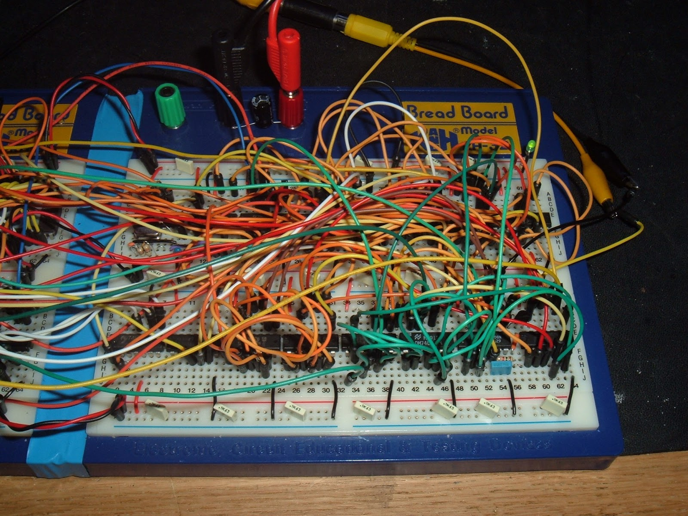

EECS16A, Designing Information Devices and Systems I
Summer 2020
Progress Tracker
To help you stay on track in this course, we have designed an optional 16A Progress Tracker , which maps out all the semester's required course assignments. It is completely self-guided, and we hope it helps you keep track of your progress in 16A! To make a personal copy of the 16A Progress Tracker, click here .
Scheduling Updates
If there are any special events to note, or deviations from the schedule as listed below, they'll be noted here!
8/9/2020: The tables of review sessions for the last week in preparation for finals is below:
| 8/12 - Modules 1 & 3 | |||||
|---|---|---|---|---|---|
| 9:30-11:00 AM | Prof. Kuo | Practice with Proofs | Zoom Link | Zoom Recording | Notes |
| 11:00 AM | Spencer | Eigenvalues / Eigenvectors / Eigenspaces | Zoom Link | Zoom Recording | Notes |
| 12:00 PM | Moses | OMP | Zoom Link | Zoom Recording | Notes |
| 2:00 PM | Deepshika | Linear Least Squares | Zoom Link | Zoom Recording | Notes |
| 6:00 PM | Deepshika | Module 1 Topics (Systems of Linear Equations, Matrix Spaces, Tranformations) | Zoom Link | Zoom Recording | Notes |
| 7:00 PM | Ben | Correlation / Inner Products / Projection | Zoom Link | Zoom Recording | N/A |
| 8/13 - Module 2 | |||||
|---|---|---|---|---|---|
| 9:30 - 11:00 AM | Prof. Zarkos | Op-amps and Circuit Design | Zoom Link | Zoom Recording | Notes |
| 11:00 AM | Spencer | NVA & Superposition | Zoom Link | Zoom Recording | Notes |
| 12:00 PM | Moses | Time Integration for Capacitative Circuits, Charge Sharing | Zoom Link | Zoom Recording | Notes |
| 2:00 PM | Miyuki | Equivalence in Series / Parallel, Resistive Touchscreen | Zoom Link | Zoom Recording | Notes |
| 6:00 PM | Miyuki | Thevenin / Norton Equivalence | Zoom Link | Zoom Recording | Notes |
| 7:00 PM | Ben | Golden Rules, (more) Op-amps in NFB | Zoom Link | Zoom Recording | N/A |
8/11/2020 (set 11 added): There is now a new resource available to help you study! This book consists of condensed sets of notes that summarize the important material from the course notes, as well as detailed solutions for the online Practice Problems! Here's the entire book (now contains all 12 practice sets!) and the Table of Contents. Individual chapters of the book can be found in the schedule below (the links aren't perfect, you may need to scroll a tiny bit down for some chapters). A couple brief comments on using this resource:
- I recommend skimming the Introductory Chapter and the Conventions Chapter. These will provide some useful tips to keep in mind.
- Each chapter has a Relevant Information section and a Problems section. The first contains a (generally complete) summary of the corresponding content from the notes. The second contains the detailed solutions mentioned above.
- This is a new resource, and may well have errors or areas to improve in; if you spot something wrong and would like to mention it, or have feedback of any kind, please submit a feedback ticket.
7/11/2020: The EECS16A Status Check has been released! You can visit this link to see a summary of your scores in the class so far (at least, those which have been graded and processed). There will be a delay between when assignments are due or when they're graded to when they're put on the Status Check. A summary of the assignments that have been released is below, and this associated piazza post has more detail. If you spot an error, submit a ticket here.
| Exams | Homework | Labs (all) | Participation (all) |
|---|---|---|---|
|
Midterm 1 Midterm 2 |
0A, 0B 1A, 1B 2A, 2B 3A, 3B 4A, 4B |
Imaging I, II, III Touchscreen I, II, III APS I, II |
Checkoffs 1 to 16 (all of them!) |
7/10/2020: Good luck on today's midterm! Also, you can now optionally toggle to a different font (Raleway) for this website.
7/5/2020 + 7/16/2020: Discussion Checkoff Solutions are mapped to their respective Piazza Post below.
| Week # | Checkoffs | Post Link(s) |
|---|---|---|
| Weeks 0 + 1 | 1, 2, 3, 4 | @101 |
| Week 2 | 5, 6 | @128 |
| Week 3 | 7, 8 | @196, @204 |
| Week 4 | 9, 10 | @239, @242 |
| Week 5 | 11, 12 | @289 |
| Week 6 | 13, 14 | @351 |
| Week 7 | 15 | @390 |
6/30/2020: We have provided .zip files to complete labs locally since some people have had trouble accessing the Datahub Links. These can be found in the schedule below. You won't need to use these unless the Datahub Links don't not work for you.
6/23/2020: Discussion checkoffs begin today! All links can be found in the schedule below, and the most recent link will also be kept here for convenience.
6/21/2020: Lecture information: Lecture will be held through a Zoom livestream. This will be recorded and linked below as soon as possible each Monday, Tuesday, Wednesday, and Thursday. The password for lecture (and discussion) recordings is eecs16a!
Lectures: MTuWTh 9:30-11:00 AM PST, Lecture Zoom Link , Phone: +1 669 900 6833, Meeting ID: 938 3865 0239
Schedule
The schedule below is subject to change; for deviations from the schedule, see above.(Please scroll horizontally if you're viewing this on your phone.)
Notes
Grey notes are *still relevant material* for the course! They simply have not yet been covered in lecture. Blue notes have been covered in lecture. Notes with an [updated] tag to their left have been changed since last semester's iteration. Be aware that the un-updated notes are subject to change.- Note 0 - Introduction
- Note 1 - Systems of Linear Equations and Gaussian Elimination
- Note 2 - Consistency, Vectors and Matrices.
- Note 3 - Linear Independence and Span
- Note 4 - Mathematical Thinking and Derivation
- Note 5 - Water Reservoirs, Pumps and Matrix Multiplication
- Note 6 - Matrix Inversion
- Note 7 - Vector Spaces
- Note 8 - Matrix Subspaces
- Note 9 - Eigenvalues and Eigenvectors
- Note 10 - Change of Basis
- Note 11 - Introduction to Circuit analysis
- Note 12 - Voltage Dividers and Resistors
- Note 13 - Resistive Touchscreen and Power
- Note 14 - More Resistive Touchscreen
- Note 15A - Superposition
- Note 15B - Equivalence
- Note 16 - Capacitors
- Note 17 - Capacitive Touchscreen and Op-Amps
- Note 17B - Charge Sharing
- Note 18 - Op-Amps in Negative Feedback
- Note 19 - More Op-Amp Topologies
- Note 20 - Op-Amp Current Source and Circuit Design
- Note 21 - Inner Products and GPS
- Note 22 - Trilateration and Correlation
- Note 23 - Least Squares
- Note 24 - Orthogonal Matching Pursuit
- Note 25 - More Trilateration
Discussion Schedule
| Discussion Schedule | ||||
|---|---|---|---|---|
| Start Time (PST) | Monday | Tuesday | Wednesday | Thursday |
| 11:00 AM | 201: Ben, Moses | 201: Ben, Moses | 201: Spencer, Moses | 201: Spencer, Moses |
| 12:00 PM | 202: Moses, Ben | 202: Moses, Ben | 202: Moses, Spencer | 202: Moses, Spencer |
| 1:00 PM | ||||
| 2:00 PM | 204: Spencer, Miyuki | 204: Spencer, Miyuki | 204: Miyuki, Ben | 204: Miyuki, Ben |
| 3:00 PM | ||||
| 4:00 PM | ||||
| 5:00 PM | ||||
| 6:00 PM | 205: Deepshika, Spencer | 205: Deepshika, Spencer | 205: Ben, Deepshika | 205: Ben, Deepshika |
| Color | Recommended Students |
|---|---|
| Red | General |
| Green | First-Years + Transfers |
Note: Monday, Tuesday, Wednesday, and Thursday discussion sections cover different material, and you need to go to a discussion each day of the week (M-Th). Scroll horizontally to view entire table. See below for discussion Zoom links and this Piazza post for all joining info.
Students are welcome to attend any discussion they choose. This year we are offering a variety of sections that may be of interest to different groups of students. Incoming first-years and transfer students are encouraged to go to the section colored in green, and red sections are open to everyone. Feel free to try out different discussion sections, and go to the one that works best for you!
Resources
Piazza (Ask Questions Here)
Homework Practice Problems
Textbook: Condensed Note Content Summaries and Practice Problem Solutions
(See above for a guide on using the text.)Recommended Texts
- EE16A's Guide to the Recommended Texts
- ELECTRONICS Reader (50MB) by Ali M. Niknejad, or the smaller file without links (5MB)
- Intoduction to Linear Algebra by Gilbert Strang, 5th Ed.
- Schaum's Outlines of Linear Algebra, 5th ed. by Seymour Lipschutz and Marc Lipson. Free if login from the university network. Also see roaming passports.
- Schaum's Outline of Electric Circuits, 7th ed. by Mahmood Nahvi and Joseph A. Edminister. Free if login from the university network. Also see roaming passports.
Circuit Cookbooks
- Recipe: Nodal Analysis!
- Recipe: Charge Sharing!
- Charge-Sharing Algorithm (Sp20)
- Recipe: Thevenin and Norton Equivalents! (INCOMPLETE)
- Recipe: Design Topologies!
Extra Resources
- Step-By-Step Gaussian Elimination by Andi Gu, a former student. Has at least one very minor bug regarding labeling of row operations.
- studEE16A (may need to load each page twice to view the LaTeX)
- Fun with Stacked Caps
- EECS16A Lab Equipment Guide
Setting up How-To's
Past Exams
Past exams vary in scope from semester to semester, and may include topics that are not in scope for the current semester or module. Unavailable exams are indicated by N/A. In-scope topics for the current semester will be posted on Piazza about a week before the corresponding exam.| Semester | Midterm 1 | Midterm 2 | Final |
|---|---|---|---|
| su20 | pdf, sol | pdf, sol | N/A |
| sp20 | pdf, sol | pdf, sol | pdf, sol |
| fa19 | pdf, sol | pdf, sol | pdf, sol |
| sp19 | pdf, sol | pdf, sol | pdf, sol |
| fa18 | pdf, sol | pdf, sol | sol |
| sp18 | pdf, sol | pdf, sol | |
| fa17 | pdf, sol | pdf, sol | sol |
| su17 | pdf, sol | pdf, sol | N/A |
| sp17 | pdf, sol | pdf, sol | N/A |
| fa16 | pdf, sol | pdf, sol | pdf, sol |
| sp16 | pdf, sol | pdf, sol | pdf, sol |
| fa15 | pdf, sol | pdf, sol | pdf, sol |
| sp15 | pdf, sol | pdf, sol | pdf, sol |
Simulations and Demos
This is a running list of simulations and demos that have been created in recent semesters (in rough order of appearance).Course Staff
Instructors
Grace Kuo
she/her/hers
gkuo@
Panos Zarkos
he/him/his
panzarkos@
Urmita Sikder
she/her/hers
urmita@
GSIs
Sam Weismann
Head/Admin GSI
he/him/his
eecs16a@
Leyla Kabuli
Head Lab
she/her/hers
lakabuli@
Dahlia Saba
HW Management
she/her/hers
eecs16a.hw@
Moses Won
Dis
he/him/his
moseswon@
Spencer Kent
Dis
he/him/his
spencer.kent@
Miyuki Weldon
Dis
she/her/hers
m.weldon@

Deepshika Dhanasekar
Dis
she/her/hers
ddhanasekar@
Ben Osoba
Dis
he/him/his
benjamin1.obafemi@
Christos Adamopoulos
Lab
he/him/his
christos.ad@
Raghav Gupta
Lab
he/him/his
raghav.tech13@
Seiya Ono
Lab
he/him/his
scono12@
Lily Bhattacharjee
Lab
she/her/hers
lbhattacharjee@
Meghana Bharadwaj
Lab
she/her/hers
meghana.bharadwaj@

Rohan Sood
Lab
he/him/his
rohansood@
Dixun Cui
Lab
he/him/his
dixuncui@
Neelesh Ramachandran
Software
he/him/his
neelesh.r@
Policies
Course Info
The EECS 16AB series (Designing Information Devices and Systems) is a pair of introductory-level courses introducing students to EECS. The courses have a particular emphasis on how to build and understand systems interacting with the world from an informational point of view. Mathematical modeling is an important theme throughout these courses, and students will learn many conceptual tools along the way. These concepts are rooted in specific application domains. Students should understand why they are learning something.
An important part of being a successful engineer is being able to identify the important and relevant structure in a complex problem while ignoring minor issues. EECS 16A focuses on modeling as abstraction: how can we see the relevant underlying structure in a problem? It introduces the basics of linear modeling, largely from a "static" and deterministic point of view. EECS 16B deepens the understanding of linear modeling and introduces dynamics and control, along with additional applications. Finally, EECS 70, (which can be thought of as the third course in this sequence --- except without any labs), introduces additional discrete structures for modeling problems, and brings in probability.
In EECS 16A in particular, we will use the application domains of imaging and tomography, smartphones and touchscreens, and GPS and localization to motivate and inspire. Along the way, we will learn the basics of linear algebra and, more importantly, the linear-algebraic way of looking at the world. The emphasis will be on modeling and using linear structures to solve problems; the class is not just focused on how to do computations. We will learn about linear circuits, not merely as a powerful and creative way to help connect the physical world to what we can process computationally, but also as an exemplar of linearity and as a vehicle for learning how to do design. Circuits also provide a concrete setting in which to learn the key concept of "equivalence" --- an important aspect of abstraction. Our hope is that the concepts you learn in EECS 16A will help you as you tackle more advanced courses and will help form a solid conceptual framework that will help you learn throughout your career.
Grade Breakdown
Our objective is to help you become the best engineer you can be, and grades are not everything. The various components of the class -- homework, labs and exams -- are designed explicitly with this in mind. Every challenge is a growth opportunity. You will have the opportunity to gain points in the course through completing your homework and attending labs as well as through the exams.
This course is not graded on a curve. We will set absolute thresholds for performance that will map to grade boundaries. We encourage you to discuss the course material with each other and teach each other new ideas and concepts that you learn. Teaching the material is one of the best ways to learn, so discussing course material with colleagues in the class is a win-win situation for everyone. Grades are not everything, far from it, but that said, here is the breakdown for grading for this class.
| Category | Points (out of 300) |
|---|---|
| Participation | 10 points |
| Homework | 45 points |
| Labs | 45 points |
| Midterm 1 | 50 points |
| Midterm 2 | 50 points |
| Final | 100 points |
Notice that you can get many points by being regular with your homework and the labs. Our goal is to help you learn the material as best as possible!
Grading Scale
This course is not curved. We define the following grading scale (in percentages):
| A+ | [100+] | A | [93+) | A- | [90+) |
| B+ | [84+) | B | [75+) | B- | [68+) |
| C+ | [65+) | C | [62+) | C- | [58+) |
| D+ | [57+) | D | [55+) | D- | [53+) |
| F | [0-, 53) |
Exam Clobber Policy
This course spans a fairly broad set of ideas and concepts within a short period of time, and hence sustained and consistent effort and investment are critical to your success in this class. Similarly, by far the most common operating mode we have observed in previous students who struggled and/or failed this class was attempting to do the bare minimum in general and then catch up/cram right before the exams.
In order to formally encourage all of you to maintain the sustained effort that we have observed to be critical to success, we will be adopting a new policy regarding exam clobbering, participation, and effort. Specifically, for students who (1) complete an optional midterm redo and (2) perform significantly better on the corresponding part of the final (linear algebra or circuits) than on the relevant midterm, we will provide the opportunity to clobber a midterm.
If you qualify for the clobber (i.e. (1) and (2)), you may replace your lowest midterm score with your scaled score on the final exam according to the formula below.
Replacement MT score (on scale of 100) = max [MT score, final exam score - 15% (on scale of 100)] This essentially allows you to replace your midterm grade by a higher grade --- we want to reward improved performance.
If you complete the optional midterm redo for both midterms, and are eligible for a clobber on both midterm, the clobber that helps your score more is applied (i.e. you may clobber either Midterm 1 or Midterm 2, but not both, and only if you complete both midterm redos). Please note that even though lecture attendance is not included (for logistical reasons) in the two criteria for clobbering eligibility, we do strongly encourage you to attend lecture in person.
Participation
Participation is worth a maximum of 10 points, and is measured by discussion checkoffs - to get full participation credit, you must complete 12 discussion checkoffs throughout the course of the semester (there will be a total of 16 offered - one every Tuesday and Thursday). Discussion checkoff forms will be released every Tuesday and Thursday, and you will be given time during discussion to complete the checkoff. (In case you can’t attend discussion live, you’ll have 48 hours to complete the checkoff - the deadline will be listed on the form and on the course calendar above.) Your grade will be prorated by the number of discussion checkoffs you complete; i.e., if you complete 10 discussion checkoffs, you will have 10/12 * 10 = 8.33 points in this category.
This summer, discussion checkoffs will be conducted through google forms, released into this Google Drive folder.
Homework Party
Homework parties are your chance to meet and interact with other students, while also having the chance to get help from GSIs, Tutors and Faculty. This is your chance to have a social experience as part of the class. We expect students to treat each other with respect during homework parties as well as during all other parts of the class -- including interactions on Piazza, discussion, and office hours. Remember that each of you is coming into a class with different experiences and backgrounds -- use this as an opportunity to learn from one another.
Tuesdays 6-8 PM PST, and Fridays 2-4 PM PST, HW Party will be held on zoom, with details found at the online OH queue. The Tuesday zoom link is here; the Friday zoom link is here. Attending homework party is highly encouraged, and is a great way to find a study group!
Students are expected to help each other out, and if desired, form ad-hoc "pickup" homework groups in the style of a pickup basketball game. We highly encourage students to attend homework party.
Office Hours
Office Hours will be held every day, as annotated on the course Google calendar. They will be hosted on the online OH queue; see that site for more details! You can come to office hours with your friends, or by yourself - there will be one or more TAs there to help you work through the concepts or the homework!
Homework Submission
There are two required homeworks every week, a shorter “A” homework due on Wednesday and a longer “B” homework due on Sunday. Homeworks are due on Wednesday nights and Sunday nights at 11:59 PM. You need to turn in a .pdf file consisting of your written-up solutions that also includes an attached pdf "printout" of your .ipynb code on Gradescope; you may use your phone camera or any page-scanning app in order to turn your written homework into a PDF, as long as your work is clear and legible In addition, Gradescope has an option to associate pages of your work to each homework problem. You must select the relevant pages for every problem. Any homework submissions that are turned in without the code “printout” (or screenshot) attached will receive a zero on the coded ipython notebook portions of the homework. Any problems without pages selected will receive zero credit. If you have any questions about the format of a homework submission, please go to office hours or homework party here.
You will have the opportunity to resubmit your homework after homework solutions are released to get makeup credit. See below for details.
Homework Grading – Self-Grading
The point of homework in this class is for you to learn the material. To help you in doing this, each student will grade their own homework in addition to being graded by 16A readers. After the HW deadline, official solutions will be posted online. You will then be expected to read them and enter your own scores and comments for every part of every problem in the homework on a simple coarse scale:
| Score | Reason |
|---|---|
| 0 | Didn't attempt or very very wrong |
| 2 | Got started and made some progress, but went off in the wrong direction or with no clear direction |
| 5 | Right direction and got half-way there |
| 8 | Mostly right but a minor thing missing or wrong |
| 10 | 100% correct |
Note: You must justify self-grades of 2, 5, or 8 with a comment. Grades of 0 and 10 do not need to be justified. If you are really confused about how to grade a particular problem, you should post on Piazza. This is not supposed to be a stressful process.
Your self-grades will be due on the Wednesday or Sunday following the homework deadline at 11:59 PM sharp. (For example: homework 0A will be due on Wednesday 6/24 at 11:59 p.m. Homework 0A self-grades will be due the following Sunday, 6/28, at 11:59 p.m.) We will accept late self-grades up to a week after the original homework deadline for 65% credit on the associated homework assignment. If you don't enter a proper grade by this deadline, you are giving yourself a zero on that assignment. Merely doing the homework is not enough, you must do the homework; turn it in on time; read the solutions; do the self-grade; and turn it in on time. Unless all of these steps are done, you will get a zero for that assignment.
We will automatically drop the lowest homework score from your final grade calculation. This drop is meant for emergencies. If you use this drop half-way into the semester, and request another, we cannot help you.
Just like we encourage you to use a study group for doing your homework, we strongly encourage you to have others help you in grading your assignments while you help grade theirs.
Course readers are going to be grading and sending you occasional comments. Because we have reader grades, we will catch any attempts at trying to inflate your own scores. This will be considered cheating and is definitely not worth the risk. Your own scores will be used in computing your final grade for the course, adjusted by taking into account reader scores so that everyone is fairly graded effectively on the same scale. For example, if we notice that you tend to give yourself 5s on questions where readers looking at your homeworks tend to give you 8s, we will apply an upward correction to adjust.
Reader grades will be released on Gradescope about one week after the homework deadline. Readers grade questions either on a “coarse” or “fine” scale for each homework part. Coarsely graded question parts are worth a single point and are based on effort. Finely graded question parts are worth a total of 10 points and are graded using the same self-grading rubric above. Homework regrade requests are typically due on Gradescope within 72 hours of reader grades being released. If a regrade request is submitted for a part of a question on the homework, the grader reserves the right to regrade the entire homework and could potentially take points off.
If you have any questions, please ask on Piazza.
Self-Grade Walkthrough
Homework Resubmission
Again, the point of homework in this class is to help you learn. We understand that sometimes work from other classes, midterms or your personal life can come in the way of making a homework deadline. For this reason we will allow you to resubmit your homework for 70% credit. Homework resubmissions must be HANDWRITTEN. Homework resubmissions will be due along with the self-grades, so HW A resubmissions will be due by 11:59pm Sunday night, and HW B Resubmisions will be due by 11:59 PM Wednesday night. For each HW, if you choose to resubmit your homework, you must submit two sets of self-grades, one for the first submission and one for the second submission. For the second submission, do self-grades as normal. We will apply the 70% correction.
What does 70% credit mean? Let us say you only were able to get halfway through a problem during the first submission. You submitted your homework on Friday, and while going through the solutions you figured out how to do the whole problem. Your self-grade for your first submission would be a 5/10. However, you can resubmit the homework problem with a fully correct solution and receive 70% of the remaining points as extra points, i.e. (10-5) * 70/100 = 3.5 extra points, and so your score for the problem would go from 5 points to 8.5 points.
Homework Effort Policy
Because the point of homework in this class is to help you learn, not to punish you for making small mistakes, if your final score (after resubmission and any other corrections are applied) on any homework is above 8/10, your grade will automatically be bumped up to 100% (10/10). If your final score is less than 8/10, it will be scaled accordingly so that a 6/10 will result in 75% (7.5/10).
Lab and Discussion Section Policies
Ways to check attendance will be posted on Piazza on a later date.
Labs for this class are not open section, you must go to your assigned lab section .
Credit for each lab is based on completion and check off with a lab TA during your assigned lab section. In a check off, you will demonstrate your work from portions of the lab and answer conceptual questions related to the lab. You should aim to get checked off by the end of your lab section. If you attend your lab section for the whole duration but do not finish in time, you may get checked off at the beginning of your next lab section, before starting the following lab. While labs are not meant to be burdensome, they are an essential part of the course. We have the following strict grading policy for labs: If you complete all the labs, you will receive full lab credit. If you fail to complete one lab, you will receive 43/45 lab credit. If you miss two labs, you will receive 30/45. If you miss three or more labs, you will get an F in the class.
| Number of Missed Labs | What Happens? |
|---|---|
| 0 | You get full lab credit - 45/45 |
| 1 | You get almost full lab credit - 43/45 |
| 2 | You get partial lab credit - 30/45 |
| 3 or more | You Fail the class - final letter grade: F |
Some lab sections are “buffer labs.” “Buffer labs” occur during several-day periods in which no new labs begin, and makeup labs are offered during all regular lab times. During buffer lab periods, you may get checked off for only one missed lab that occurred during that lab module by attending your assigned section, no other labs can be checked off. The buffer lab periods may not exactly align with the end of each lab module, so the eligible labs for makeup for each buffer lab period are indicated on the course schedule.
Wires on lab breadboards must be planar. Lab staff will ask students to redo their circuits before debugging them if the wires are non-planar. The definition of planar wires on a breadboard is shown below:
| Planar | Non-planar |
 |
 |
Please note the yellow wires in the picture on the left - they look like spaghetti. Professor Kuo’s favorite food is pasta!
You may go to any discussion section. We encourage you to go to the same discussion sections every week so that the TAs can get to know you personally.
Exam Policies
There are two midterms and one final (all times are in PST). The midterms will be held Friday, July 10, 2020 from 7:00 PM to 9:00 PM and Friday, July 31st, 2020 from 7:00 PM to 9:00 PM. The final will be held on Friday, August 14, from 7:00 PM to 10:00 PM. Makeup Exams will not be scheduled. Alternate exam times will not be provided.
Please plan for exams at these times. In case of an emergency on exam day, please email the Head GSI at eecs16a@berkeley.edu as soon as possible and provide details of the issue as well as a contact phone number. Emergency exam conflicts will be handled on a case-by-case basis. Exam conflicts originating from a lecture conflict will not be accommodated.
Regrade requests on Gradescope are typically due within a week of exams being released on Gradescope. Late regrade requests will not be considered. If a regrade request is submitted for a part of a question on the exam, the grader reserves the right to regrade the entire exam and could potentially take points off.
Exceptions and Exam Accommodation
Any requests for exceptions should be emailed to the Head GSI at eecs16a@berkeley.edu. Email the exception request as soon as possible. Exceptions will be handled on a case-by-case basis. Since there is one homework drop, missing homework is rarely excused. Examples of situations that merit an exception are medical emergencies and family emergencies. It will be easier for us to grant an exception if you have a doctor’s note or other documentation.
Course Communication
The instructors and TAs will post announcements, clarifications, hints, etc. on Piazza. Hence you must check the EECS16A Piazza page frequently throughout the term. (You should already have access to the EECS16A Spring 2020 forum. If you do not, please let us know.)
If you have a question, your best option is to post a message on Piazza. The staff (instructors and TAs) will check the forum regularly, and if you use the forum, other students will be able to help you too. When using the forum, please avoid off-topic discussions, and please do not post answers to homework questions before the homework is due. Also, always look for a convenient category to post the question to (for example, each homework will have its own category, so please post there). That will ensure you get the answer faster.
If your question is personal or not of interest to other students, you may mark your question as private on Piazza, so only the instructors will see it. If you wish to talk with one of us individually, you are welcome to come to our office hours. Please reserve email for the questions you can't get answered in office hours, in discussion sections, or through the forum.
For any exceptions that are of a personal nature, please contact the head GSI at eecs16a@berkeley.edu. Technical and homework questions are best resolved in homework party and during office hours (online OH queue).
It can be challenging for the instructors to gauge how smoothly the class is going. We always welcome any feedback on what we could be doing better. If you would like to send anonymous comments or criticisms, please fill out this anonymous feedback form.
Collaboration
We encourage you to work on homework problems in study groups of two to four people; however, you must always write up the solutions on your own. Similarly, you may use books or online resources to help solve homework problems, but you must always credit all such sources in your write up, and you must never copy material verbatim. Using previous EECS 16A homework, exam, and lab solutions is strictly prohibited, and will be considered academic dishonesty. This is not how you want to start your career as an engineer.
We expect that most students can distinguish between helping other students and cheating. Explaining the meaning of a question, discussing a way of approaching a solution, or collaboratively exploring how to solve a problem within your group is an interaction that we encourage strongly. But you should write your homework solution strictly by yourself so that your hands and eyes can help you internalize the subject matter. You should acknowledge everyone whom you have worked with, or who has given you any significant ideas about the homework. This is good scholarly conduct.
Collaboration on exams or other designated assessments is strictly forbidden, subject to the Berkeley Honor Code and the parameters of the specific assessment.
Don't Be Afraid to Ask for Help
Are you struggling? Please come talk with us! The earlier we learn about your struggles, the more likely it is that we can help you. Waiting until right before an exam or the last few weeks of the semester to let us know about your problems is not an effective strategy - the later it is, the less we will be able to help you.
Even if you are convinced that you are the only person in the class who is struggling, please overcome any feelings of embarrassment or guilt, and come ask for help as soon as you need it -- we can almost guarantee you're not the only person who feels this way. Don't hesitate to ask us for help -- we really do care that you thrive! You can email eecs16a@berkeley.edu, or email / talk to any TA at any time -- we’re happy to help.
Advice
The following tips are offered based on our experience.
Do the homeworks! The homeworks are explicitly designed to help you to learn the material as you go along. There is usually a strong correlation between homework scores and final grades in the class.
Keep up with lectures! Discussion sections, labs and homeworks all touch on portions of what we discuss in lecture. Students do much better if they stay on track with the course. That will also help you keep the pace with your homework and study group.
Take part in discussion sections! Discussion sections are not auxiliary lectures. They are an opportunity for interactive learning. The success of a discussion section depends largely on the willingness of students to participate actively in it. As with office hours, the better prepared you are for the discussion, the more you are likely to benefit from it.
Please come to office hours! We love to talk to you and do a deep dive to help you understand the material better.
Form study groups! As stated above, you are encouraged to form small groups (two to four people) to work together on homeworks and on understanding the class material on a regular basis. In addition to being fun, this can save you a lot of time by generating ideas quickly and preventing you from getting hung up on some point or other. Of course, it is your responsibility to ensure that you contribute actively to the group; passive listening will likely not help you much. And recall the caveat above that you must write up your solutions on your own. We advise you strongly to spend some time on your own thinking about each problem before you meet with your study partners; this way, you will be in a position to compare ideas with your partners, and it will get you in practice for the exams. Make sure you work through all problems yourself, and that your final write-up is your own. Some groups try to split up the problems ("you do Problem 1, I'll do Problem 2, then we'll swap notes"); not only is this a punishable violation of our collaboration policies, it also ensures you will learn a lot less from this course.
About
EECS 16AB Course Coverage
EECS16AB was specially designed to ramp students up to prepare for courses in machine learning and design and are important classes to set the stage for the rest of your time in the department. A rough breakdown of the content in the classes is as follows:
16A:
Module 1: Introduction to systems and linear algebra
Module 2: Introduction to design and circuit analysis
Module 3: Introduction to machine learning
16B:
Module 1: Differential equations and advanced circuit design
Module 2: Introduction to robotics and control
Module 3: Introduction to unsupervised machine learning and classification
FAQ
Q1: Should I take EECS16A my first semester at Cal?
A1: If you have taken an AP calculus class, then the answer is yes! EECS16A has no prerequisites other than calculus and is designed with freshmen and incoming transfer students in mind. It is designed to be taken alongside 61A. Furthermore, we reserve seats for freshmen and incoming transfer students in the class, so you are essentially guaranteed a spot in the class your first year. It will be harder to get into the class as an upperclassman.
Q2: Should I take EECS 16A and EECS 16B before or after CS 70?
A2: EECS16A and 16B were specifically designed to help ease the transition to CS70 for incoming students. These classes provide an introduction to proofs and the kind of mathematical thinking that is very useful in a class like CS70. We recommend you take 16AB before taking CS70, this should help you have an easier time in CS 70.
Q3: Should I take MATH 54 before taking EECS16A?
A3: EECS 16A is designed to be taken without any prerequisites, so there is no need to take MATH 54 before EECS 16A. EECS 16AB teaches linear algebra with the intent of preparing you for courses like EECS 127 (Optimization) and EECS 189 (Machine Learning) and provides engineering and machine learning examples and applications for linear algebra. EECS 16AB also uses Jupyter notebooks and python so you can better connect linear algebra and computation.